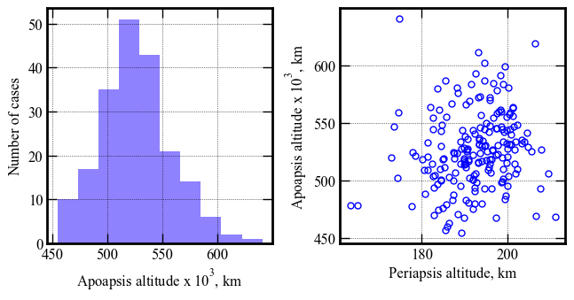
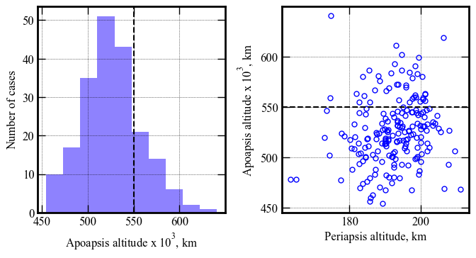
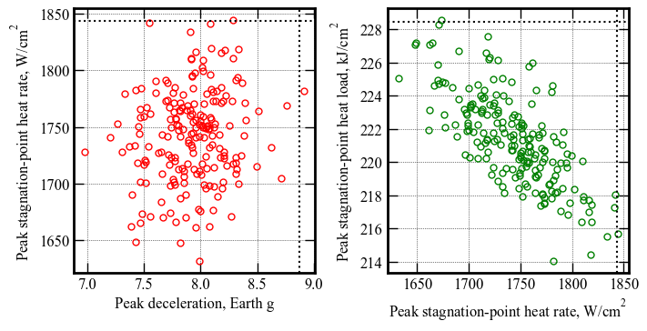
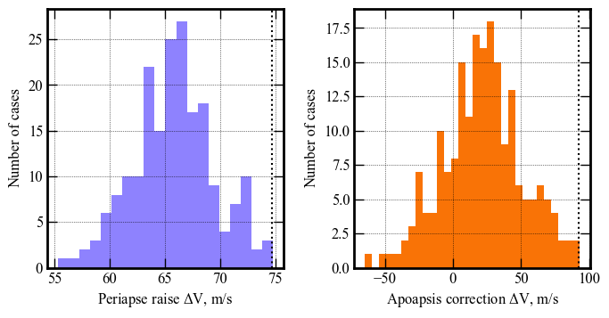

Section 08 - Performance Analysis - B - 3X Lower EFPA uncertainty¶
[1]:
from AMAT.planet import Planet
from AMAT.vehicle import Vehicle
[2]:
import numpy as np
import matplotlib.pyplot as plt
[3]:
planet = Planet('URANUS')
planet.loadAtmosphereModel('../../../atmdata/Uranus/uranus-gram-avg.dat', 0 , 1 ,2, 3, heightInKmFlag=True)
planet.h_skip = 1000.0E3
planet.h_low = 120e3
planet.h_trap = 100e3
[7]:
vehicle=Vehicle('Titania', 3200.0, 146 , 0.24, np.pi*4.5**2.0, 0.0, 1.125, planet)
vehicle.setInitialState(1000.0,-15.22,75.55,29.2877,88.687,-11.7 ,0.0,0.0)
vehicle.setSolverParams(1E-6)
# Set the guidance parameters described in the paper.
# See the function description for parameter details.
# Set max roll rate constraint to 30 deg/s
vehicle.setMaxRollRate(30.0)
# Set Ghdot = 83
# Set Gq = 9.0
# Set v_switch_kms = 16.0 :: this parameter is not really used, and should just be set to low value
# Set low_Alt_km = 120
# Set numPoints_lowAlt = 101
# Set hdot_threshold = -500 m/s
vehicle.setEquilibriumGlideParams(83.0, 9.0, 16.0, 120.0, 101, -500.0)
# Set target orbit parameters
# periapsis = 4000.0 km
# apoapsis = 550,000 km :: set slightly above target (500e3) to account for bias in targeting algorithm
# apoapsis tolerance = 10 km
vehicle.setTargetOrbitParams(4000.0, 550.0E3, 10.0E3)
[8]:
# Set path to atmfiles with randomly perturbed atmosphere files.
atmfiles = ['../../../atmdata/Uranus/perturbed/G-01.txt',
'../../../atmdata/Uranus/perturbed/G-02.txt',
'../../../atmdata/Uranus/perturbed/G-03.txt',
'../../../atmdata/Uranus/perturbed/G-04.txt',
'../../../atmdata/Uranus/perturbed/G-05.txt']
[9]:
vehicle.setupMonteCarloSimulation(1201, 200, atmfiles, 0, 1, 2, 3, 4, True, \
-11.70, 0.03, 0.24, 0.013, 0.5, 0.1, 2400.0)
Small run N = 200¶
[10]:
vehicle.runMonteCarlo2(200, '../../../data/acta-astronautica/uranus-orbiter-probe/MCBXB')
RUN #: 1, SAMPLE #: 20, EFPA: -11.67, SIGMA: 0.75, LD: 0.23, APO : 545361.11
RUN #: 2, SAMPLE #: 191, EFPA: -11.69, SIGMA: 0.27, LD: 0.23, APO : 538785.25
RUN #: 3, SAMPLE #: 30, EFPA: -11.73, SIGMA: -0.16, LD: 0.23, APO : 534049.81
RUN #: 4, SAMPLE #: 178, EFPA: -11.66, SIGMA: -0.08, LD: 0.24, APO : 474296.74
RUN #: 5, SAMPLE #: 196, EFPA: -11.68, SIGMA: -0.91, LD: 0.25, APO : 516969.64
RUN #: 6, SAMPLE #: 13, EFPA: -11.69, SIGMA: 0.04, LD: 0.24, APO : 511642.74
RUN #: 7, SAMPLE #: 55, EFPA: -11.75, SIGMA: 1.83, LD: 0.21, APO : 531440.62
RUN #: 8, SAMPLE #: 186, EFPA: -11.69, SIGMA: 1.00, LD: 0.24, APO : 498620.16
RUN #: 9, SAMPLE #: 37, EFPA: -11.72, SIGMA: -1.38, LD: 0.26, APO : 587100.73
RUN #: 10, SAMPLE #: 162, EFPA: -11.70, SIGMA: -1.39, LD: 0.24, APO : 520185.76
RUN #: 11, SAMPLE #: 36, EFPA: -11.66, SIGMA: 1.05, LD: 0.24, APO : 527340.33
RUN #: 12, SAMPLE #: 33, EFPA: -11.69, SIGMA: -0.45, LD: 0.25, APO : 502757.78
RUN #: 13, SAMPLE #: 85, EFPA: -11.67, SIGMA: 0.17, LD: 0.26, APO : 559279.28
RUN #: 14, SAMPLE #: 25, EFPA: -11.70, SIGMA: 0.54, LD: 0.23, APO : 547300.05
RUN #: 15, SAMPLE #: 89, EFPA: -11.73, SIGMA: 1.61, LD: 0.25, APO : 531976.48
RUN #: 16, SAMPLE #: 149, EFPA: -11.67, SIGMA: -1.30, LD: 0.23, APO : 494113.86
RUN #: 17, SAMPLE #: 199, EFPA: -11.75, SIGMA: -0.11, LD: 0.21, APO : 515358.43
RUN #: 18, SAMPLE #: 82, EFPA: -11.70, SIGMA: 0.38, LD: 0.25, APO : 525353.23
RUN #: 19, SAMPLE #: 24, EFPA: -11.72, SIGMA: 2.25, LD: 0.24, APO : 535307.54
RUN #: 20, SAMPLE #: 75, EFPA: -11.69, SIGMA: 0.60, LD: 0.24, APO : 569470.01
RUN #: 21, SAMPLE #: 31, EFPA: -11.66, SIGMA: 0.43, LD: 0.23, APO : 562943.12
RUN #: 22, SAMPLE #: 193, EFPA: -11.66, SIGMA: -0.93, LD: 0.25, APO : 536691.69
RUN #: 23, SAMPLE #: 98, EFPA: -11.70, SIGMA: -0.29, LD: 0.24, APO : 567172.60
RUN #: 24, SAMPLE #: 8, EFPA: -11.71, SIGMA: 0.99, LD: 0.23, APO : 526749.22
RUN #: 25, SAMPLE #: 25, EFPA: -11.71, SIGMA: 0.72, LD: 0.25, APO : 583547.60
RUN #: 26, SAMPLE #: 62, EFPA: -11.71, SIGMA: 1.05, LD: 0.23, APO : 480108.13
RUN #: 27, SAMPLE #: 179, EFPA: -11.73, SIGMA: 0.47, LD: 0.22, APO : 503658.64
RUN #: 28, SAMPLE #: 114, EFPA: -11.77, SIGMA: 0.59, LD: 0.21, APO : 476028.85
RUN #: 29, SAMPLE #: 180, EFPA: -11.68, SIGMA: 1.41, LD: 0.25, APO : 514399.95
RUN #: 30, SAMPLE #: 170, EFPA: -11.66, SIGMA: 0.79, LD: 0.24, APO : 539983.90
RUN #: 31, SAMPLE #: 78, EFPA: -11.71, SIGMA: 1.22, LD: 0.24, APO : 572407.86
RUN #: 32, SAMPLE #: 29, EFPA: -11.73, SIGMA: 0.57, LD: 0.25, APO : 557614.59
RUN #: 33, SAMPLE #: 161, EFPA: -11.70, SIGMA: 1.20, LD: 0.23, APO : 518096.52
RUN #: 34, SAMPLE #: 83, EFPA: -11.66, SIGMA: -1.08, LD: 0.24, APO : 504377.27
RUN #: 35, SAMPLE #: 124, EFPA: -11.77, SIGMA: -1.85, LD: 0.25, APO : 478437.35
RUN #: 36, SAMPLE #: 5, EFPA: -11.67, SIGMA: 1.40, LD: 0.24, APO : 591218.91
RUN #: 37, SAMPLE #: 94, EFPA: -11.69, SIGMA: -1.26, LD: 0.25, APO : 546596.52
RUN #: 38, SAMPLE #: 136, EFPA: -11.72, SIGMA: -0.50, LD: 0.24, APO : 504315.45
RUN #: 39, SAMPLE #: 34, EFPA: -11.69, SIGMA: 1.94, LD: 0.25, APO : 525569.82
RUN #: 40, SAMPLE #: 198, EFPA: -11.68, SIGMA: 1.88, LD: 0.25, APO : 493467.63
RUN #: 41, SAMPLE #: 94, EFPA: -11.70, SIGMA: -0.61, LD: 0.22, APO : 525357.79
RUN #: 42, SAMPLE #: 165, EFPA: -11.66, SIGMA: 0.38, LD: 0.25, APO : 531475.02
RUN #: 43, SAMPLE #: 20, EFPA: -11.68, SIGMA: -0.86, LD: 0.25, APO : 544852.53
RUN #: 44, SAMPLE #: 155, EFPA: -11.70, SIGMA: 0.85, LD: 0.25, APO : 542355.80
RUN #: 45, SAMPLE #: 67, EFPA: -11.69, SIGMA: -0.27, LD: 0.24, APO : 587064.90
RUN #: 46, SAMPLE #: 103, EFPA: -11.71, SIGMA: 0.85, LD: 0.25, APO : 545206.00
RUN #: 47, SAMPLE #: 1, EFPA: -11.65, SIGMA: 1.94, LD: 0.25, APO : 554760.26
RUN #: 48, SAMPLE #: 167, EFPA: -11.67, SIGMA: -3.61, LD: 0.21, APO : 518479.33
RUN #: 49, SAMPLE #: 5, EFPA: -11.68, SIGMA: -0.20, LD: 0.26, APO : 518821.16
RUN #: 50, SAMPLE #: 25, EFPA: -11.72, SIGMA: -1.44, LD: 0.22, APO : 521390.81
RUN #: 51, SAMPLE #: 74, EFPA: -11.67, SIGMA: -0.72, LD: 0.25, APO : 514255.95
RUN #: 52, SAMPLE #: 114, EFPA: -11.68, SIGMA: 0.17, LD: 0.22, APO : 511438.78
RUN #: 53, SAMPLE #: 54, EFPA: -11.72, SIGMA: 1.01, LD: 0.21, APO : 523957.47
RUN #: 54, SAMPLE #: 5, EFPA: -11.70, SIGMA: 2.48, LD: 0.24, APO : 493150.17
RUN #: 55, SAMPLE #: 122, EFPA: -11.70, SIGMA: 0.93, LD: 0.24, APO : 544969.24
RUN #: 56, SAMPLE #: 167, EFPA: -11.74, SIGMA: 0.69, LD: 0.24, APO : 527131.16
RUN #: 57, SAMPLE #: 12, EFPA: -11.72, SIGMA: 0.36, LD: 0.27, APO : 516756.22
RUN #: 58, SAMPLE #: 175, EFPA: -11.68, SIGMA: 0.62, LD: 0.26, APO : 544507.58
RUN #: 59, SAMPLE #: 113, EFPA: -11.69, SIGMA: -1.69, LD: 0.23, APO : 483370.62
RUN #: 60, SAMPLE #: 195, EFPA: -11.69, SIGMA: -0.54, LD: 0.27, APO : 506527.89
RUN #: 61, SAMPLE #: 95, EFPA: -11.66, SIGMA: -0.22, LD: 0.25, APO : 479523.81
RUN #: 62, SAMPLE #: 20, EFPA: -11.67, SIGMA: -0.89, LD: 0.22, APO : 554956.89
RUN #: 63, SAMPLE #: 85, EFPA: -11.68, SIGMA: -0.04, LD: 0.24, APO : 517329.27
RUN #: 64, SAMPLE #: 13, EFPA: -11.65, SIGMA: -1.52, LD: 0.23, APO : 454590.15
RUN #: 65, SAMPLE #: 139, EFPA: -11.73, SIGMA: -0.08, LD: 0.23, APO : 528229.54
RUN #: 66, SAMPLE #: 80, EFPA: -11.70, SIGMA: 1.13, LD: 0.25, APO : 506262.05
RUN #: 67, SAMPLE #: 101, EFPA: -11.68, SIGMA: -0.74, LD: 0.24, APO : 529748.97
RUN #: 68, SAMPLE #: 169, EFPA: -11.65, SIGMA: 0.28, LD: 0.24, APO : 540527.39
RUN #: 69, SAMPLE #: 40, EFPA: -11.71, SIGMA: 1.45, LD: 0.24, APO : 468588.66
RUN #: 70, SAMPLE #: 49, EFPA: -11.73, SIGMA: 0.57, LD: 0.24, APO : 543682.01
RUN #: 71, SAMPLE #: 103, EFPA: -11.70, SIGMA: -3.30, LD: 0.22, APO : 478202.52
RUN #: 72, SAMPLE #: 119, EFPA: -11.76, SIGMA: 0.17, LD: 0.22, APO : 487959.46
RUN #: 73, SAMPLE #: 90, EFPA: -11.70, SIGMA: 0.41, LD: 0.23, APO : 593327.59
RUN #: 74, SAMPLE #: 158, EFPA: -11.68, SIGMA: 1.03, LD: 0.25, APO : 483534.87
RUN #: 75, SAMPLE #: 125, EFPA: -11.66, SIGMA: -1.62, LD: 0.23, APO : 522400.65
RUN #: 76, SAMPLE #: 82, EFPA: -11.66, SIGMA: 0.73, LD: 0.23, APO : 506725.73
RUN #: 77, SAMPLE #: 104, EFPA: -11.72, SIGMA: -0.36, LD: 0.25, APO : 500663.25
RUN #: 78, SAMPLE #: 35, EFPA: -11.71, SIGMA: 0.49, LD: 0.26, APO : 519178.63
RUN #: 79, SAMPLE #: 196, EFPA: -11.65, SIGMA: -0.52, LD: 0.24, APO : 506036.59
RUN #: 80, SAMPLE #: 132, EFPA: -11.72, SIGMA: -0.34, LD: 0.27, APO : 563520.14
RUN #: 81, SAMPLE #: 35, EFPA: -11.73, SIGMA: -0.35, LD: 0.24, APO : 523188.21
RUN #: 82, SAMPLE #: 142, EFPA: -11.74, SIGMA: -0.81, LD: 0.24, APO : 518078.60
RUN #: 83, SAMPLE #: 181, EFPA: -11.74, SIGMA: 0.23, LD: 0.24, APO : 611305.58
RUN #: 84, SAMPLE #: 142, EFPA: -11.67, SIGMA: 0.82, LD: 0.25, APO : 534862.89
RUN #: 85, SAMPLE #: 12, EFPA: -11.69, SIGMA: 0.04, LD: 0.23, APO : 602075.36
RUN #: 86, SAMPLE #: 132, EFPA: -11.74, SIGMA: 1.03, LD: 0.23, APO : 514206.65
RUN #: 87, SAMPLE #: 31, EFPA: -11.67, SIGMA: 1.23, LD: 0.25, APO : 495649.62
RUN #: 88, SAMPLE #: 68, EFPA: -11.66, SIGMA: -1.56, LD: 0.25, APO : 569694.05
RUN #: 89, SAMPLE #: 42, EFPA: -11.69, SIGMA: -0.25, LD: 0.23, APO : 474931.81
RUN #: 90, SAMPLE #: 10, EFPA: -11.68, SIGMA: -0.23, LD: 0.24, APO : 500006.59
RUN #: 91, SAMPLE #: 100, EFPA: -11.71, SIGMA: -0.14, LD: 0.24, APO : 578812.38
RUN #: 92, SAMPLE #: 31, EFPA: -11.69, SIGMA: 0.35, LD: 0.23, APO : 580735.21
RUN #: 93, SAMPLE #: 42, EFPA: -11.73, SIGMA: -0.28, LD: 0.23, APO : 516106.35
RUN #: 94, SAMPLE #: 49, EFPA: -11.66, SIGMA: 0.41, LD: 0.25, APO : 555203.53
RUN #: 95, SAMPLE #: 68, EFPA: -11.68, SIGMA: -0.73, LD: 0.24, APO : 536262.71
RUN #: 96, SAMPLE #: 190, EFPA: -11.68, SIGMA: 0.91, LD: 0.24, APO : 584458.33
RUN #: 97, SAMPLE #: 8, EFPA: -11.75, SIGMA: 0.68, LD: 0.24, APO : 498572.18
RUN #: 98, SAMPLE #: 7, EFPA: -11.70, SIGMA: 0.82, LD: 0.24, APO : 531595.85
RUN #: 99, SAMPLE #: 133, EFPA: -11.61, SIGMA: 0.71, LD: 0.22, APO : 506357.85
RUN #: 100, SAMPLE #: 11, EFPA: -11.66, SIGMA: 1.59, LD: 0.23, APO : 544274.54
RUN #: 101, SAMPLE #: 154, EFPA: -11.68, SIGMA: -0.22, LD: 0.20, APO : 490421.91
RUN #: 102, SAMPLE #: 153, EFPA: -11.65, SIGMA: -2.36, LD: 0.24, APO : 580373.56
RUN #: 103, SAMPLE #: 81, EFPA: -11.67, SIGMA: -0.61, LD: 0.28, APO : 546177.95
RUN #: 104, SAMPLE #: 170, EFPA: -11.72, SIGMA: 1.18, LD: 0.24, APO : 599458.10
RUN #: 105, SAMPLE #: 165, EFPA: -11.71, SIGMA: 0.98, LD: 0.25, APO : 535674.38
RUN #: 106, SAMPLE #: 106, EFPA: -11.70, SIGMA: 0.47, LD: 0.22, APO : 555698.49
RUN #: 107, SAMPLE #: 189, EFPA: -11.71, SIGMA: 0.97, LD: 0.22, APO : 493040.15
RUN #: 108, SAMPLE #: 137, EFPA: -11.74, SIGMA: 1.07, LD: 0.24, APO : 519617.01
RUN #: 109, SAMPLE #: 23, EFPA: -11.71, SIGMA: -0.95, LD: 0.24, APO : 514599.65
RUN #: 110, SAMPLE #: 4, EFPA: -11.75, SIGMA: -0.47, LD: 0.25, APO : 496974.51
RUN #: 111, SAMPLE #: 115, EFPA: -11.66, SIGMA: -1.20, LD: 0.23, APO : 500790.89
RUN #: 112, SAMPLE #: 85, EFPA: -11.71, SIGMA: -0.53, LD: 0.26, APO : 572061.65
RUN #: 113, SAMPLE #: 140, EFPA: -11.67, SIGMA: -0.72, LD: 0.22, APO : 523551.31
RUN #: 114, SAMPLE #: 41, EFPA: -11.72, SIGMA: 0.18, LD: 0.25, APO : 514189.49
RUN #: 115, SAMPLE #: 176, EFPA: -11.67, SIGMA: -0.51, LD: 0.25, APO : 482914.35
RUN #: 116, SAMPLE #: 80, EFPA: -11.69, SIGMA: 0.72, LD: 0.26, APO : 581025.06
RUN #: 117, SAMPLE #: 115, EFPA: -11.69, SIGMA: -1.02, LD: 0.25, APO : 467619.09
RUN #: 118, SAMPLE #: 79, EFPA: -11.72, SIGMA: -1.33, LD: 0.24, APO : 469908.05
RUN #: 119, SAMPLE #: 200, EFPA: -11.69, SIGMA: 0.71, LD: 0.23, APO : 516322.50
RUN #: 120, SAMPLE #: 36, EFPA: -11.74, SIGMA: -1.64, LD: 0.25, APO : 502455.88
RUN #: 121, SAMPLE #: 120, EFPA: -11.70, SIGMA: -0.61, LD: 0.24, APO : 502598.94
RUN #: 122, SAMPLE #: 98, EFPA: -11.64, SIGMA: -1.44, LD: 0.25, APO : 533146.11
RUN #: 123, SAMPLE #: 74, EFPA: -11.72, SIGMA: -1.16, LD: 0.24, APO : 499566.68
RUN #: 124, SAMPLE #: 172, EFPA: -11.71, SIGMA: -0.75, LD: 0.24, APO : 573003.05
RUN #: 125, SAMPLE #: 48, EFPA: -11.70, SIGMA: 0.22, LD: 0.22, APO : 557155.62
RUN #: 126, SAMPLE #: 90, EFPA: -11.72, SIGMA: -0.63, LD: 0.27, APO : 549967.56
RUN #: 127, SAMPLE #: 96, EFPA: -11.65, SIGMA: -0.51, LD: 0.24, APO : 544101.51
RUN #: 128, SAMPLE #: 96, EFPA: -11.70, SIGMA: -1.21, LD: 0.22, APO : 561557.33
RUN #: 129, SAMPLE #: 156, EFPA: -11.68, SIGMA: 1.12, LD: 0.24, APO : 541792.23
RUN #: 130, SAMPLE #: 21, EFPA: -11.69, SIGMA: 2.70, LD: 0.24, APO : 469286.89
RUN #: 131, SAMPLE #: 116, EFPA: -11.70, SIGMA: -0.98, LD: 0.25, APO : 566093.69
RUN #: 132, SAMPLE #: 123, EFPA: -11.69, SIGMA: 1.04, LD: 0.26, APO : 541937.68
RUN #: 133, SAMPLE #: 185, EFPA: -11.66, SIGMA: 1.38, LD: 0.25, APO : 509975.97
RUN #: 134, SAMPLE #: 178, EFPA: -11.70, SIGMA: 0.81, LD: 0.23, APO : 559952.24
RUN #: 135, SAMPLE #: 43, EFPA: -11.71, SIGMA: 0.81, LD: 0.24, APO : 531089.62
RUN #: 136, SAMPLE #: 2, EFPA: -11.66, SIGMA: -0.42, LD: 0.24, APO : 548446.64
RUN #: 137, SAMPLE #: 31, EFPA: -11.69, SIGMA: -0.06, LD: 0.21, APO : 576065.87
RUN #: 138, SAMPLE #: 126, EFPA: -11.72, SIGMA: 0.52, LD: 0.25, APO : 526247.32
RUN #: 139, SAMPLE #: 96, EFPA: -11.73, SIGMA: 0.00, LD: 0.25, APO : 543746.95
RUN #: 140, SAMPLE #: 54, EFPA: -11.67, SIGMA: 0.81, LD: 0.26, APO : 499416.52
RUN #: 141, SAMPLE #: 152, EFPA: -11.72, SIGMA: 0.49, LD: 0.27, APO : 519317.77
RUN #: 142, SAMPLE #: 197, EFPA: -11.66, SIGMA: -0.08, LD: 0.24, APO : 480385.07
RUN #: 143, SAMPLE #: 192, EFPA: -11.67, SIGMA: 1.08, LD: 0.24, APO : 520402.46
RUN #: 144, SAMPLE #: 46, EFPA: -11.67, SIGMA: 0.14, LD: 0.25, APO : 514575.79
RUN #: 145, SAMPLE #: 196, EFPA: -11.77, SIGMA: 0.89, LD: 0.23, APO : 486561.87
RUN #: 146, SAMPLE #: 92, EFPA: -11.71, SIGMA: -0.66, LD: 0.25, APO : 503561.64
RUN #: 147, SAMPLE #: 43, EFPA: -11.69, SIGMA: -0.43, LD: 0.24, APO : 524227.83
RUN #: 148, SAMPLE #: 4, EFPA: -11.68, SIGMA: 0.00, LD: 0.23, APO : 524968.92
RUN #: 149, SAMPLE #: 2, EFPA: -11.69, SIGMA: 1.76, LD: 0.24, APO : 518742.82
RUN #: 150, SAMPLE #: 133, EFPA: -11.68, SIGMA: -0.09, LD: 0.23, APO : 527401.93
RUN #: 151, SAMPLE #: 153, EFPA: -11.70, SIGMA: -1.16, LD: 0.25, APO : 518215.12
RUN #: 152, SAMPLE #: 160, EFPA: -11.71, SIGMA: -0.37, LD: 0.24, APO : 495655.39
RUN #: 153, SAMPLE #: 100, EFPA: -11.66, SIGMA: -0.08, LD: 0.26, APO : 561898.79
RUN #: 154, SAMPLE #: 179, EFPA: -11.68, SIGMA: 0.68, LD: 0.23, APO : 547317.95
RUN #: 155, SAMPLE #: 119, EFPA: -11.70, SIGMA: 0.48, LD: 0.26, APO : 513817.56
RUN #: 156, SAMPLE #: 33, EFPA: -11.71, SIGMA: -1.62, LD: 0.25, APO : 509954.19
RUN #: 157, SAMPLE #: 61, EFPA: -11.67, SIGMA: -1.39, LD: 0.24, APO : 508813.55
RUN #: 158, SAMPLE #: 198, EFPA: -11.69, SIGMA: -0.55, LD: 0.24, APO : 509022.87
RUN #: 159, SAMPLE #: 132, EFPA: -11.70, SIGMA: 0.53, LD: 0.25, APO : 510124.80
RUN #: 160, SAMPLE #: 129, EFPA: -11.68, SIGMA: 0.33, LD: 0.26, APO : 532197.08
RUN #: 161, SAMPLE #: 63, EFPA: -11.69, SIGMA: 0.47, LD: 0.22, APO : 533544.21
RUN #: 162, SAMPLE #: 106, EFPA: -11.74, SIGMA: 1.01, LD: 0.26, APO : 556206.16
RUN #: 163, SAMPLE #: 30, EFPA: -11.69, SIGMA: 2.56, LD: 0.26, APO : 526717.19
RUN #: 164, SAMPLE #: 66, EFPA: -11.73, SIGMA: 0.28, LD: 0.24, APO : 467574.69
RUN #: 165, SAMPLE #: 96, EFPA: -11.69, SIGMA: -1.49, LD: 0.23, APO : 520524.54
RUN #: 166, SAMPLE #: 64, EFPA: -11.69, SIGMA: -0.15, LD: 0.24, APO : 523910.06
RUN #: 167, SAMPLE #: 52, EFPA: -11.67, SIGMA: 0.49, LD: 0.24, APO : 528024.79
RUN #: 168, SAMPLE #: 66, EFPA: -11.73, SIGMA: -0.34, LD: 0.21, APO : 488315.54
RUN #: 169, SAMPLE #: 191, EFPA: -11.72, SIGMA: 1.54, LD: 0.25, APO : 529284.60
RUN #: 170, SAMPLE #: 38, EFPA: -11.75, SIGMA: 0.92, LD: 0.24, APO : 501191.06
RUN #: 171, SAMPLE #: 190, EFPA: -11.73, SIGMA: 0.25, LD: 0.23, APO : 460000.67
RUN #: 172, SAMPLE #: 91, EFPA: -11.71, SIGMA: -0.30, LD: 0.23, APO : 531603.92
RUN #: 173, SAMPLE #: 176, EFPA: -11.76, SIGMA: -0.18, LD: 0.21, APO : 530349.10
RUN #: 174, SAMPLE #: 14, EFPA: -11.72, SIGMA: 0.23, LD: 0.26, APO : 584125.64
RUN #: 175, SAMPLE #: 9, EFPA: -11.74, SIGMA: -0.02, LD: 0.22, APO : 529831.03
RUN #: 176, SAMPLE #: 186, EFPA: -11.70, SIGMA: 0.59, LD: 0.24, APO : 558485.73
RUN #: 177, SAMPLE #: 168, EFPA: -11.71, SIGMA: -0.35, LD: 0.24, APO : 531054.91
RUN #: 178, SAMPLE #: 95, EFPA: -11.69, SIGMA: -1.54, LD: 0.24, APO : 477510.12
RUN #: 179, SAMPLE #: 10, EFPA: -11.69, SIGMA: 0.34, LD: 0.23, APO : 470862.12
RUN #: 180, SAMPLE #: 164, EFPA: -11.67, SIGMA: 1.84, LD: 0.25, APO : 619117.94
RUN #: 181, SAMPLE #: 166, EFPA: -11.69, SIGMA: 0.40, LD: 0.22, APO : 547019.38
RUN #: 182, SAMPLE #: 71, EFPA: -11.71, SIGMA: -0.01, LD: 0.23, APO : 500770.24
RUN #: 183, SAMPLE #: 189, EFPA: -11.70, SIGMA: -0.70, LD: 0.24, APO : 548622.73
RUN #: 184, SAMPLE #: 17, EFPA: -11.72, SIGMA: -1.31, LD: 0.25, APO : 533737.22
RUN #: 185, SAMPLE #: 33, EFPA: -11.70, SIGMA: 1.88, LD: 0.21, APO : 534160.77
RUN #: 186, SAMPLE #: 96, EFPA: -11.70, SIGMA: 0.75, LD: 0.26, APO : 560032.96
RUN #: 187, SAMPLE #: 78, EFPA: -11.69, SIGMA: 1.12, LD: 0.26, APO : 526947.85
RUN #: 188, SAMPLE #: 125, EFPA: -11.73, SIGMA: -0.29, LD: 0.23, APO : 559556.57
RUN #: 189, SAMPLE #: 165, EFPA: -11.66, SIGMA: 0.75, LD: 0.23, APO : 511518.05
RUN #: 190, SAMPLE #: 161, EFPA: -11.70, SIGMA: 0.44, LD: 0.23, APO : 542807.08
RUN #: 191, SAMPLE #: 51, EFPA: -11.72, SIGMA: 0.41, LD: 0.23, APO : 456870.87
RUN #: 192, SAMPLE #: 96, EFPA: -11.67, SIGMA: -0.51, LD: 0.24, APO : 462990.91
RUN #: 193, SAMPLE #: 137, EFPA: -11.71, SIGMA: 0.16, LD: 0.25, APO : 492746.35
RUN #: 194, SAMPLE #: 25, EFPA: -11.68, SIGMA: -0.46, LD: 0.24, APO : 479609.99
RUN #: 195, SAMPLE #: 113, EFPA: -11.64, SIGMA: 0.57, LD: 0.22, APO : 515118.98
RUN #: 196, SAMPLE #: 184, EFPA: -11.70, SIGMA: -3.25, LD: 0.24, APO : 640674.51
RUN #: 197, SAMPLE #: 53, EFPA: -11.72, SIGMA: 1.89, LD: 0.25, APO : 509019.30
RUN #: 198, SAMPLE #: 63, EFPA: -11.67, SIGMA: 0.79, LD: 0.21, APO : 522327.70
RUN #: 199, SAMPLE #: 153, EFPA: -11.70, SIGMA: 0.78, LD: 0.26, APO : 563747.91
RUN #: 200, SAMPLE #: 56, EFPA: -11.71, SIGMA: -0.50, LD: 0.20, APO : 517576.08
[4]:
p1 = np.loadtxt('../../../data/acta-astronautica/uranus-orbiter-probe/MCBXB/terminal_periapsis_arr.txt')
x1 = np.loadtxt('../../../data/acta-astronautica/uranus-orbiter-probe/MCBXB/terminal_apoapsis_arr.txt')
y1 = np.loadtxt('../../../data/acta-astronautica/uranus-orbiter-probe/MCBXB/acc_net_g_max_arr.txt')
z1 = np.loadtxt('../../../data/acta-astronautica/uranus-orbiter-probe/MCBXB/q_stag_max_arr.txt')
h1 = np.loadtxt('../../../data/acta-astronautica/uranus-orbiter-probe/MCBXB/heatload_max_arr.txt')
u1 = np.loadtxt('../../../data/acta-astronautica/uranus-orbiter-probe/MCBXB/periapsis_raise_DV_arr.txt')
v1 = np.loadtxt('../../../data/acta-astronautica/uranus-orbiter-probe/MCBXB/apoapsis_raise_DV_arr.txt')
[6]:
fig, axes = plt.subplots(1, 2, figsize = (6.5, 3.25))
plt.rc('font',family='Times New Roman')
params = {'mathtext.default': 'regular' }
plt.rcParams.update(params)
fig.tight_layout()
plt.subplots_adjust(wspace=0.30)
axes[0].hist(x1/1000.0, bins=10, color='xkcd:periwinkle')
axes[0].set_xlabel('Apoapsis altitude x '+r'$10^3$'+', km', fontsize=12)
axes[0].set_ylabel('Number of cases', fontsize=12)
axes[0].tick_params(direction='in')
axes[0].yaxis.set_ticks_position('both')
axes[0].xaxis.set_ticks_position('both')
axes[0].tick_params(axis='x',labelsize=12)
axes[0].tick_params(axis='y',labelsize=12)
axes[1].plot(p1, x1/1000.0, 'bo', markersize=5, mfc='None')
axes[1].set_xlabel('Periapsis altitude, km',fontsize=12)
axes[1].set_ylabel('Apoapsis altitude x '+r'$10^3$'+', km', fontsize=12)
axes[1].tick_params(direction='in')
axes[1].yaxis.set_ticks_position('both')
axes[1].xaxis.set_ticks_position('both')
axes[1].tick_params(axis='x',labelsize=12)
axes[1].tick_params(axis='y',labelsize=12)
for ax in axes:
ax.xaxis.set_tick_params(direction='in', which='both')
ax.yaxis.set_tick_params(direction='in', which='both')
ax.xaxis.set_tick_params(width=1, length=8)
ax.yaxis.set_tick_params(width=1, length=8)
ax.xaxis.set_tick_params(width=1, length=6, which='minor')
ax.yaxis.set_tick_params(width=1, length=6, which='minor')
ax.xaxis.grid(which='major', color='k', linestyle='dotted', linewidth=0.5)
ax.xaxis.grid(which='minor', color='k', linestyle='dotted', linewidth=0.0)
ax.yaxis.grid(which='major', color='k', linestyle='dotted', linewidth=0.5)
ax.yaxis.grid(which='minor', color='k', linestyle='dotted', linewidth=0.0)
for axis in ['top', 'bottom', 'left', 'right']:
ax.spines[axis].set_linewidth(2)
plt.show()

Remove outlier cases¶
There are no outlier cases.
[6]:
print("--------------------------------------------------------------------------------------------------------")
print("Parameter | Min. 0.13-percentile Mean 99.87-percentile Max")
print("--------------------------------------------------------------------------------------------------------")
print("Apoapsis altitude, km | " + str(round(np.min(x1))) + " " + str(round(np.percentile(x1, 0.13))) +\
" " + str(round(np.average(x1))) +
" " + str(round(np.percentile(x1, 99.87)))+\
" " + str(round(np.max(x1))))
print("Periapsis altitude, km | " + str(round(np.min(p1))) + " " + str(round(np.percentile(p1, 0.13))) +\
" " + str(round(np.average(p1))) +
" " + str(round(np.percentile(p1, 99.87)))+\
" " + str(round(np.max(p1))))
print("Peak deceleration, g | " + str(round(np.min(y1), 2)) + " " + str(round(np.percentile(y1, 0.13), 2)) +\
" " + str(round(np.average(y1), 2)) +
" " + str(round(np.percentile(y1, 99.87), 2))+\
" " + str(round(np.max(y1), 2)))
print("Peak heat rate, W/cm2 | " + str(round(np.min(z1))) + " " + str(round(np.percentile(z1, 0.13))) +\
" " + str(round(np.average(z1))) +
" " + str(round(np.percentile(z1, 99.87)))+\
" " + str(round(np.max(z1))))
print("Peak heat load, kJ/cm2 | " + str(round(np.min(h1))) + " " + str(round(np.percentile(h1, 0.13))) +\
" " + str(round(np.average(h1))) +
" " + str(round(np.percentile(h1, 99.87)))+\
" " + str(round(np.max(h1))))
print("Periapsis raise dV, m/s| " + str(round(np.min(u1), 2)) + " " + str(round(np.percentile(u1, 0.13), 2)) +\
" " + str(round(np.average(u1), 2)) +
" " + str(round(np.percentile(u1, 99.87), 2))+\
" " + str(round(np.max(u1), 2)))
print("Apoapsis corr. dV, m/s | " + str(round(np.min(v1), 2)) + " " + str(round(np.percentile(v1, 0.13), 2)) +\
" " + str(round(np.average(v1), 2)) +
" " + str(round(np.percentile(v1, 99.87), 2))+\
" " + str(round(np.max(v1), 2)))
print("--------------------------------------------------------------------------------------------------------")
--------------------------------------------------------------------------------------------------------
Parameter | Min. 0.13-percentile Mean 99.87-percentile Max
--------------------------------------------------------------------------------------------------------
Apoapsis altitude, km | 454590 455180 526433 635098 640675
Periapsis altitude, km | 163 164 192 211 211
Peak deceleration, g | 6.98 7.04 7.92 8.88 8.92
Peak heat rate, W/cm2 | 1632 1636 1742 1844 1844
Peak heat load, kJ/cm2 | 214 214 221 228 229
Periapsis raise dV, m/s| 55.33 55.65 65.85 74.67 74.74
Apoapsis corr. dV, m/s | -64.51 -60.95 21.78 92.36 93.04
--------------------------------------------------------------------------------------------------------
[8]:
fig, axes = plt.subplots(1, 2, figsize = (6.75, 3.5))
plt.rc('font',family='Times New Roman')
params = {'mathtext.default': 'regular' }
plt.rcParams.update(params)
fig.tight_layout()
plt.subplots_adjust(wspace=0.30)
axes[0].axvline(x=550.0, linewidth=1.5, color='k', linestyle='dashed')
axes[0].hist(x1/1000.0, bins=10, color='xkcd:periwinkle')
axes[0].set_xlabel('Apoapsis altitude x '+r'$10^3$'+', km', fontsize=12)
axes[0].set_ylabel('Number of cases', fontsize=12)
axes[0].tick_params(direction='in')
axes[0].yaxis.set_ticks_position('both')
axes[0].xaxis.set_ticks_position('both')
axes[0].tick_params(axis='x',labelsize=12)
axes[0].tick_params(axis='y',labelsize=12)
axes[1].plot(p1, x1/1000.0, 'bo', markersize=5, mfc='None')
axes[1].axhline(y=550.0, linewidth=1.5, color='k', linestyle='dashed')
axes[1].set_xlabel('Periapsis altitude, km',fontsize=12)
axes[1].set_ylabel('Apoapsis altitude x '+r'$10^3$'+', km', fontsize=12)
axes[1].tick_params(direction='in')
axes[1].yaxis.set_ticks_position('both')
axes[1].xaxis.set_ticks_position('both')
axes[1].tick_params(axis='x',labelsize=12)
axes[1].tick_params(axis='y',labelsize=12)
for ax in axes:
ax.xaxis.set_tick_params(direction='in', which='both')
ax.yaxis.set_tick_params(direction='in', which='both')
ax.xaxis.set_tick_params(width=1, length=8)
ax.yaxis.set_tick_params(width=1, length=8)
ax.xaxis.set_tick_params(width=1, length=6, which='minor')
ax.yaxis.set_tick_params(width=1, length=6, which='minor')
ax.xaxis.grid(which='major', color='k', linestyle='dotted', linewidth=0.5)
ax.xaxis.grid(which='minor', color='k', linestyle='dotted', linewidth=0.0)
ax.yaxis.grid(which='major', color='k', linestyle='dotted', linewidth=0.5)
ax.yaxis.grid(which='minor', color='k', linestyle='dotted', linewidth=0.0)
for axis in ['top', 'bottom', 'left', 'right']:
ax.spines[axis].set_linewidth(2)
plt.savefig('../../../data/acta-astronautica/uranus-orbiter-probe/periapsis-vs-apoapsis-XB.png', dpi= 300,bbox_inches='tight')
plt.savefig('../../../data/acta-astronautica/uranus-orbiter-probe/periapsis-vs-apoapsis-XB.pdf', dpi=300,bbox_inches='tight')
plt.savefig('../../../data/acta-astronautica/uranus-orbiter-probe/periapsis-vs-apoapsis-XB.eps', dpi=300,bbox_inches='tight')
plt.show()

[17]:
fig, axes = plt.subplots(1, 2, figsize = (6.75, 3.5))
plt.rc('font',family='Times New Roman')
params = {'mathtext.default': 'regular' }
plt.rcParams.update(params)
fig.tight_layout()
plt.subplots_adjust(wspace=0.30)
axes[0].plot(y1, z1, 'ro', markersize=5, mfc='None')
axes[0].axhline(y=np.percentile(z1, 99.87), linewidth=1.5, color='k', linestyle='dotted')
axes[0].axvline(x=np.percentile(y1, 99.87), linewidth=1.5, color='k', linestyle='dotted')
axes[0].set_xlabel('Peak deceleration, Earth g', fontsize=12)
axes[0].set_ylabel('Peak stagnation-point heat rate, '+r'$W/cm^2$', fontsize=12)
axes[0].tick_params(direction='in')
axes[0].yaxis.set_ticks_position('both')
axes[0].xaxis.set_ticks_position('both')
axes[0].tick_params(axis='x',labelsize=12)
axes[0].tick_params(axis='y',labelsize=12)
axes[1].plot(z1, h1, 'go', markersize=5, mfc='None')
axes[1].axhline(y=np.percentile(h1, 99.87), linewidth=1.5, color='k', linestyle='dotted')
axes[1].axvline(x=np.percentile(z1, 99.87), linewidth=1.5, color='k', linestyle='dotted')
axes[1].set_xlabel('Peak stagnation-point heat rate, '+r'$W/cm^2$', fontsize=12)
axes[1].set_ylabel('Peak stagnation-point heat load, '+r'$kJ/cm^2$', fontsize=12)
axes[1].tick_params(direction='in')
axes[1].yaxis.set_ticks_position('both')
axes[1].xaxis.set_ticks_position('both')
axes[1].tick_params(axis='x',labelsize=12)
axes[1].tick_params(axis='y',labelsize=12)
for ax in axes:
ax.xaxis.set_tick_params(direction='in', which='both')
ax.yaxis.set_tick_params(direction='in', which='both')
ax.xaxis.set_tick_params(width=1, length=8)
ax.yaxis.set_tick_params(width=1, length=8)
ax.xaxis.set_tick_params(width=1, length=6, which='minor')
ax.yaxis.set_tick_params(width=1, length=6, which='minor')
ax.xaxis.grid(which='major', color='k', linestyle='dotted', linewidth=0.5)
ax.xaxis.grid(which='minor', color='k', linestyle='dotted', linewidth=0.0)
ax.yaxis.grid(which='major', color='k', linestyle='dotted', linewidth=0.5)
ax.yaxis.grid(which='minor', color='k', linestyle='dotted', linewidth=0.0)
for axis in ['top', 'bottom', 'left', 'right']:
ax.spines[axis].set_linewidth(2)
plt.savefig('../../../data/acta-astronautica/uranus-orbiter-probe/heat-rate-vs-g-load-XB.png', dpi= 300,bbox_inches='tight')
plt.savefig('../../../data/acta-astronautica/uranus-orbiter-probe/heat-rate-vs-g-load-XB.pdf', dpi=300,bbox_inches='tight')
plt.savefig('../../../data/acta-astronautica/uranus-orbiter-probe/heat-rate-vs-g-load-XB.eps', dpi=300,bbox_inches='tight')
plt.show()

[19]:
fig, axes = plt.subplots(1, 2, figsize = (6.75, 3.5))
plt.rc('font',family='Times New Roman')
params = {'mathtext.default': 'regular' }
plt.rcParams.update(params)
fig.tight_layout()
plt.subplots_adjust(wspace=0.30)
axes[0].hist(u1, bins=20, color='xkcd:periwinkle')
axes[0].axvline(x=np.percentile(u1, 99.87), linewidth=1.5, color='k', linestyle='dotted')
axes[0].set_xlabel('Periapse raise '+r'$\Delta V$'+', m/s', fontsize=12)
axes[0].set_ylabel('Number of cases', fontsize=12)
axes[0].tick_params(direction='in')
axes[0].yaxis.set_ticks_position('both')
axes[0].xaxis.set_ticks_position('both')
axes[0].tick_params(axis='x',labelsize=12)
axes[0].tick_params(axis='y',labelsize=12)
axes[1].hist(v1, bins=30, color='xkcd:orange')
axes[1].axvline(x=np.percentile(v1, 99.87), linewidth=1.5, color='k', linestyle='dotted')
axes[1].set_xlabel('Apoapsis correction '+r'$\Delta V$'+', m/s', fontsize=12)
axes[1].set_ylabel('Number of cases', fontsize=12)
axes[1].tick_params(direction='in')
axes[1].yaxis.set_ticks_position('both')
axes[1].xaxis.set_ticks_position('both')
axes[1].tick_params(axis='x',labelsize=12)
axes[1].tick_params(axis='y',labelsize=12)
for ax in axes:
ax.xaxis.set_tick_params(direction='in', which='both')
ax.yaxis.set_tick_params(direction='in', which='both')
ax.xaxis.set_tick_params(width=1, length=8)
ax.yaxis.set_tick_params(width=1, length=8)
ax.xaxis.set_tick_params(width=1, length=6, which='minor')
ax.yaxis.set_tick_params(width=1, length=6, which='minor')
ax.xaxis.grid(which='major', color='k', linestyle='dotted', linewidth=0.5)
ax.xaxis.grid(which='minor', color='k', linestyle='dotted', linewidth=0.0)
ax.yaxis.grid(which='major', color='k', linestyle='dotted', linewidth=0.5)
ax.yaxis.grid(which='minor', color='k', linestyle='dotted', linewidth=0.0)
for axis in ['top', 'bottom', 'left', 'right']:
ax.spines[axis].set_linewidth(2)
plt.savefig('../../../data/acta-astronautica/uranus-orbiter-probe/prm-arm-maneuvers-XB.png', dpi= 300,bbox_inches='tight')
plt.savefig('../../../data/acta-astronautica/uranus-orbiter-probe/prm-arm-maneuvers-XB.pdf', dpi=300,bbox_inches='tight')
plt.savefig('../../../data/acta-astronautica/uranus-orbiter-probe/prm-arm-maneuvers-XB.eps', dpi=300,bbox_inches='tight')
plt.show()

[7]:
def percent_between(a, lower, upper, closed_left=True, closed_right=True):
"""
Finds the percentage of values between a range for a numpy array
Parameters
----------
a: np.ndarray
numpy array to calculate percentage
lower: int, float
lower bound
upper: int, float
upper bound
closed_left:
closed left bound ( > vs >= )
closed_right:
closed right bound ( < vs <= )
"""
l = np.greater if not closed_left else np.greater_equal
r = np.less if not closed_right else np.less_equal
c = l(a, lower) & r(a, upper)
return np.count_nonzero(c) / float(a.size)
[13]:
p1 = np.loadtxt('../../../data/acta-astronautica/uranus-orbiter-probe/MCBXB/terminal_periapsis_arr.txt')
x1 = np.loadtxt('../../../data/acta-astronautica/uranus-orbiter-probe/MCBXB/terminal_apoapsis_arr.txt')
y1 = np.loadtxt('../../../data/acta-astronautica/uranus-orbiter-probe/MCBXB/acc_net_g_max_arr.txt')
z1 = np.loadtxt('../../../data/acta-astronautica/uranus-orbiter-probe/MCBXB/q_stag_max_arr.txt')
h1 = np.loadtxt('../../../data/acta-astronautica/uranus-orbiter-probe/MCBXB/heatload_max_arr.txt')
u1 = np.loadtxt('../../../data/acta-astronautica/uranus-orbiter-probe/MCBXB/periapsis_raise_DV_arr.txt')
v1 = np.loadtxt('../../../data/acta-astronautica/uranus-orbiter-probe/MCBXB/apoapsis_raise_DV_arr.txt')
[14]:
percent_between(x1, 500e3, 600e3)
[14]:
0.785
[22]:
percent_between(x1, 450e3, 650e3)
[22]:
1.0
[23]:
percent_between(x1, 350e3, 750e3)
[23]:
1.0